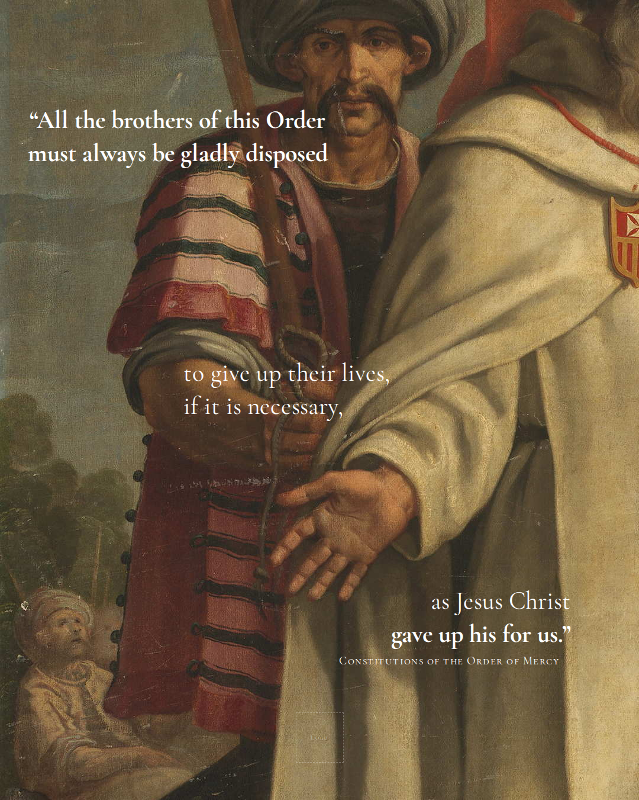
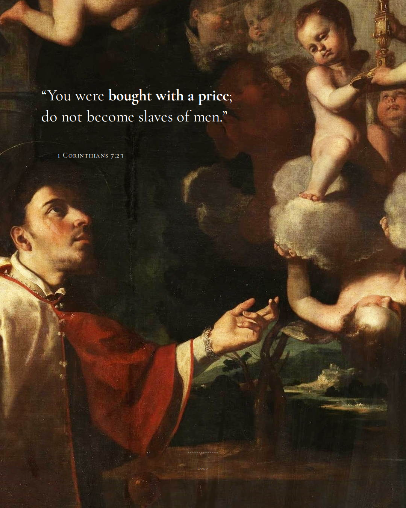
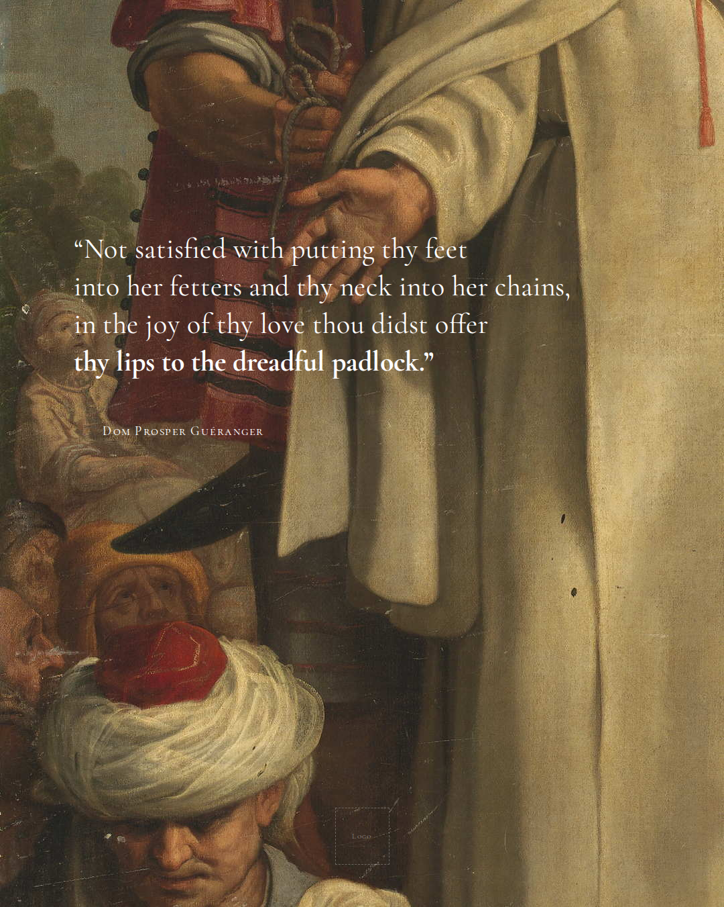
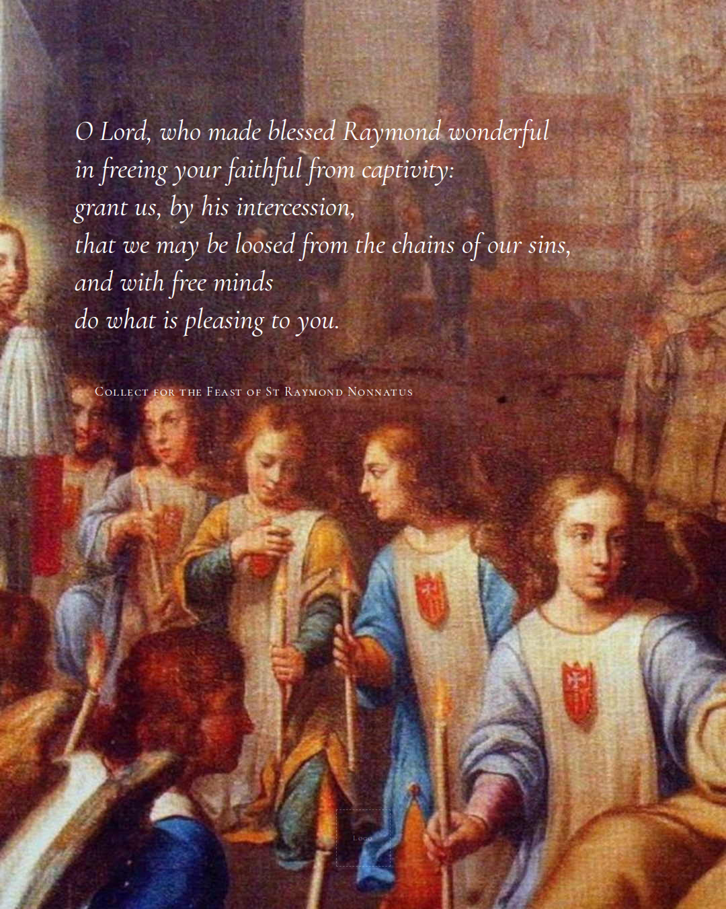
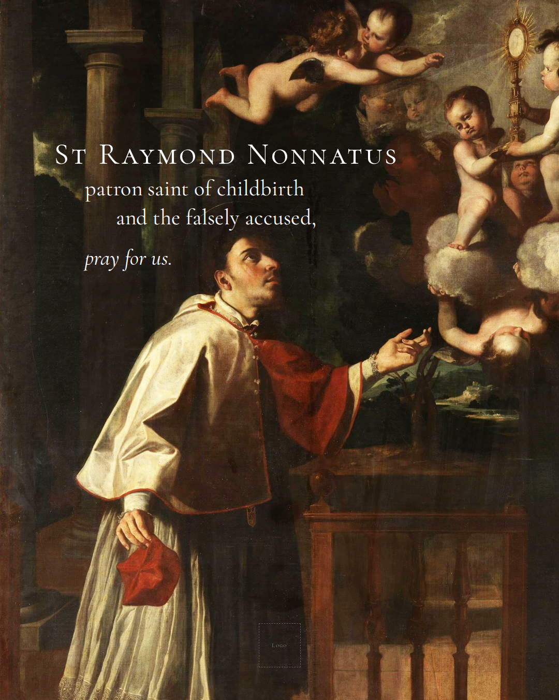
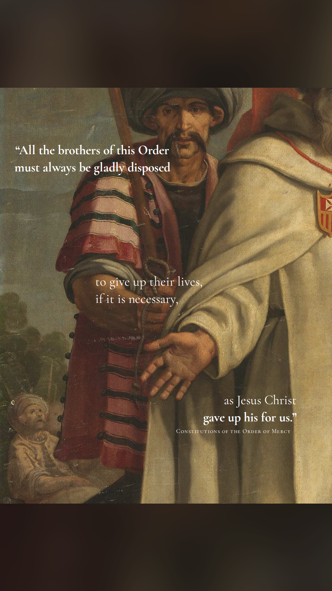
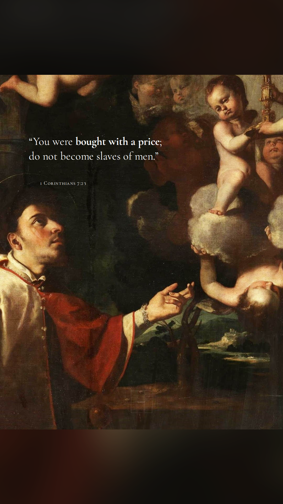
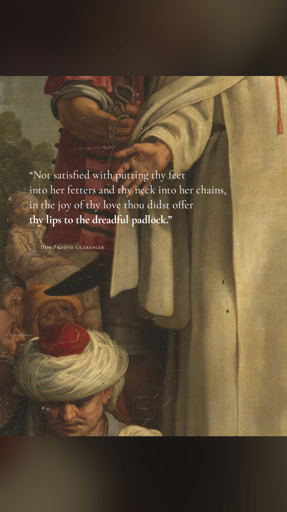
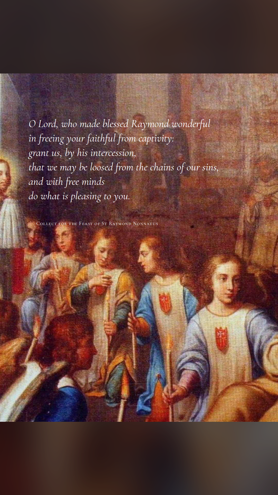
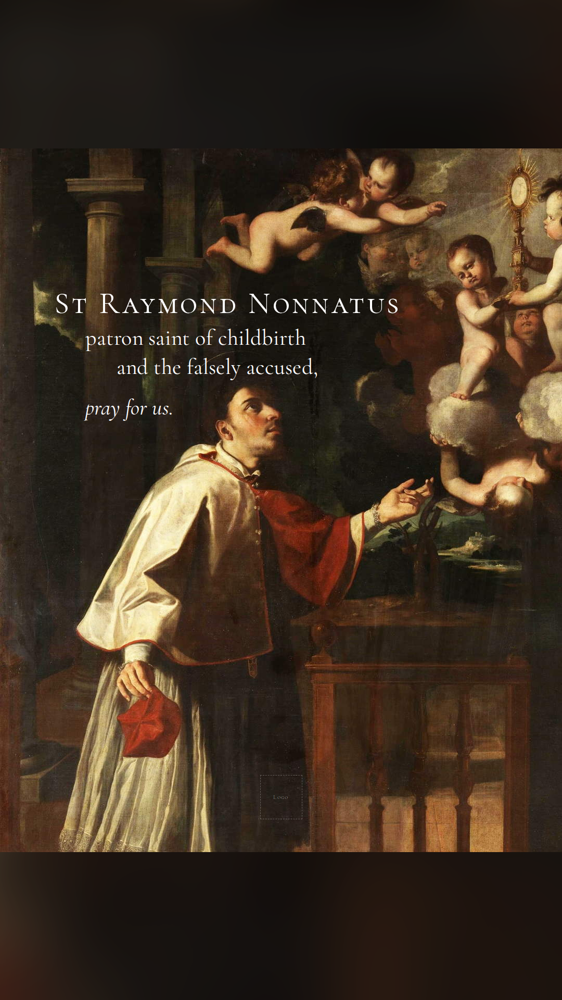

Saint Match · Feast of 31 August
A five-slide carousel. White Cormorant Garamond set over cropped details of three seventeenth-century Spanish paintings. Legibility comes entirely from crop placement — there are no scrims, gradients or overlays anywhere.
For the Instagram feed and X. This is the primary set.





For TikTok Photo Mode and Instagram / Facebook Stories. Same five slides, uncropped, centred on a blurred and darkened fill of their own artwork.





For YouTube Shorts. The five slides in order, roughly 3.4 s each with a cross-dissolve between. 17.6 s, silent, H.264.
Verbatim, including the dot spacer that pushes the hashtags below the fold.
St Raymond Nonnatus, priest of the Order of the Blessed Virgin Mary of Mercy The Mercedarians existed for one purpose: to buy back Christians enslaved in North Africa. Alongside poverty, chastity and obedience they took a fourth vow—to remain behind as hostages themselves, in the place of captives in danger of losing their faith, if the ransom money ran out. Raymond was one of their redeemers. In Algiers, the tradition remembers, the money ran out. He stayed. His captors pierced his lips and closed them with a padlock to stop him preaching. Little of his life can be documented with certainty—the Church has kept its shape rather than its dates—but the shape is unmistakable: a man who made himself the currency, and was then denied even the ability to say why. His life reminds us that most of us could accept a sacrifice if we were permitted to explain it. The padlock is what remains when the explaining is taken away. St Raymond Nonnatus, patron saint of expectant mothers and the falsely accused, pray for us. • • • • • • • • • • • • #catholicyouth #saintoftheday #catholic #holy
All three paintings are in the public domain: the artists died in 1638, 1667 and 1626 respectively, so the works are out of copyright worldwide by any term, and faithful photographic reproductions of two-dimensional public-domain artworks are not themselves eligible for a new copyright.
Vicente Carducho (c. 1576–1638), Martirio de san Ramón Nonato — Museo del Prado, Madrid. Slides 1 and 3 (two different crops).
commons.wikimedia.org
Jerónimo Jacinto de Espinosa (1600–1667), San Ramón Nonato — Museo del Prado, Madrid. Slides 2 and 5 (a tight crop and a full-length view).
commons.wikimedia.org
Santiago Morán the Elder (c. 1571–1626), Última comunión de san Ramón Nonato. Slide 4.
commons.wikimedia.org
Attribution is not legally required for public-domain works, but crediting the artist and the collection in the post is good practice and worth doing.
Raymond's life is thinly documented, and several familiar details are later tradition rather than record. The caption is written to respect that.
For the same reason no quotation on any slide is attributed to Raymond himself — he left no writings. Slides 1–3 quote, respectively, the Constitutions of the Order of Mercy, 1 Corinthians 7:23, and Dom Prosper Guéranger's The Liturgical Year; slide 4 is the Collect for his feast.
{kind=link}
{kind=link}
{kind=link}
{kind=link}
{kind=link}
{kind=link}
{kind=link}
{kind=link}
{kind=link}
{kind=link}
{kind=link}
.jpg){kind=link}
{kind=link}